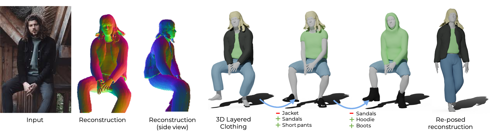
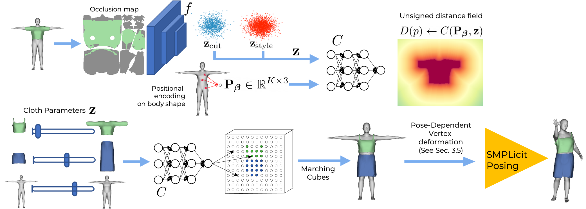

SMPLicit: Topology-aware Generative Model for Clothed People
Enric Corona, Albert Pumarola, Guillem Alenyà, Gerard Pons-Moll, Francesc Moreno-Noguer

Abstract
In this paper we introduce SMPLicit, a novel generative model to jointly represent body pose, shape and clothing geometry. In contrast to existing learning-based approaches that require training specific models for each type of garment, SMPLicit can represent in a unified manner different garment topologies (e.g. from sleeveless tops to hoodies and to open jackets), while controlling other properties like the garment size or tightness/looseness. We show our model to be applicable to a large variety of garments including T-shirts, hoodies, jackets, shorts, pants, skirts, shoes and even hair. The representation flexibility of SMPLicit builds upon an implicit model conditioned with the SMPL human body parameters and a learnable latent space which is semantically interpretable and aligned with the clothing attributes.
The proposed model is fully differentiable, allowing for its use into larger end-to-end trainable systems. In the experimental section, we demonstrate SMPLicit can be readily used for fitting 3D scans and for 3D reconstruction in images of dressed people. In both cases we are able to go beyond state of the art, by retrieving complex garment geometries, handling situations with multiple clothing layers and providing a tool for easy outfit editing. To stimulate further research in this direction, we will make our code and model publicly available at https://enriccorona.github.io/smplicit/.
How does SMPLicit work?
Architecture of SMPLicit during training (top row) and inference (bottom row). At the core of SMPLicit lies an implicit-function network C that predicts unsigned distance from the query point p to the cloth iso-surface. The input point is given the underlying SMPL body shape. During training, we jointly train the network C as the latent space representation is created. We include an image encoder f that takes SMPL occlusion maps from ground truth garments and maps them to shape representations (cut), and a second component (style) trained as an auto-decoder.
At inference, we run the network C() for a densely sampled 3D space and use Marching Cubes to generate the 3D garment mesh. We finally pose each cloth vertex using the learnt skinning parameters~\cite{smpl} of the closest SMPL vertex.
Applications
In this paper, we show the potential of SMPLicit for several computer vision and graphics applications. Mainly, we show how SMPLicit can be fitted to 3D scans of dressed humans, or directly to in-the-wild images for perception tasks, taking advantage of the full differentiability of the predicted unsigned distance field with respect to cloth parameters. The following image shows our results when itting SMPLicit in multi-person images from the MPII dataset. SMPLicit can dress SMPL with a variety of clothes. Failure case in bottom-right example, where cloth semantic segmentation mixes shirts and jackets in most upper-bodies, and SMPLicit wrongly optimizes two similar intersecting jackets.

Publication
SMPLicit: Topology-aware Generative Model for Clothed People
E. Corona, A. Pumarola, G. Alenyà, G. Pons-Moll, F. Moreno-Noguer
in Conference on Computer Vision and Pattern Recognition (CVPR), 2021
Project Page Paper SMPLicit code Fitting SMPLicit Bibtex
@inproceedings{corona2021smplicit,
Author = {Corona, Enric and Pumarola, Albert and Aleny{\`a}, Guillem and Pons-Moll, Gerard and Moreno-Noguer, Francesc},
Title = {SMPLicit: Topology-aware Generative Model for Clothed People},
Year = {2021},
booktitle = {CVPR},
}
Citation
@inproceedings{corona2021smplicit,
Author = {Corona, Enric and Pumarola, Albert and Aleny{\`a}, Guillem and Pons-Moll, Gerard and Moreno-Noguer, Francesc},
Title = {SMPLicit: Topology-aware Generative Model for Clothed People},
Year = {2021},
booktitle = {CVPR},
}